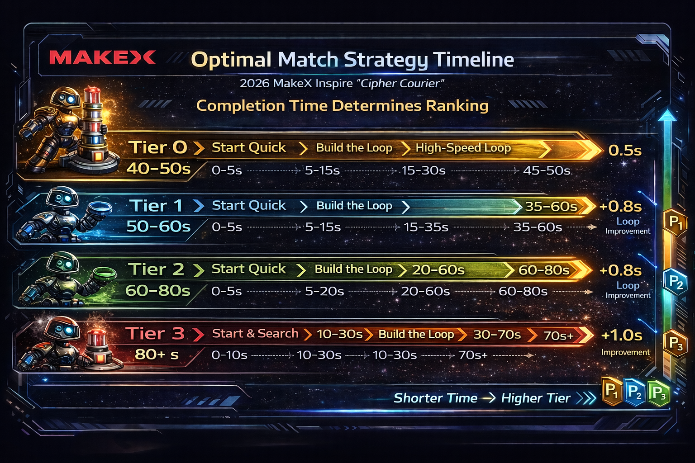

Inspire Detail
MakeX Inspire 次级页面
用于展示 Inspire 赛项的规划重点
这个页面可用于补充 Inspire 的任务理解、基础得分逻辑、课堂组织方式和阶段安排内容。


Inspire 规则摘要
限制
机器人尺寸与重量
- 最大展开尺寸为 250 mm × 250 mm × 300 mm，检录按最大展开状态测量。
- 机器人最大净重量不得超过 2 kg。
机械
轮子与零件限制
- 最多 2 个动力轮 + 1 个辅助轮，动力轮不能使用全向轮。
- 车轮直径不超过 70 mm。
- 自制零件单个不超过 5 × 5 × 5 cm，总数不超过 15 个。
动力
电机与舵机数量
- 电机和舵机总数量最多 5 个。
- 只能使用规则表允许的电机和舵机。
- 禁止更改电机或舵机内部机械结构和电气布局。
得分
加密环与计分方式
- 正式得分道具只有“加密环”，150 秒单阶段统一计分。
- 10 分 / 个：转运到对应颜色信标塔所在投递区。
- 50 分 / 个：完整套在对应颜色信标塔上。
建议继续加入以下内容：
- 任务目标与教学切入点
- 基础得分路径与节奏安排
- 课堂组织与演示步骤